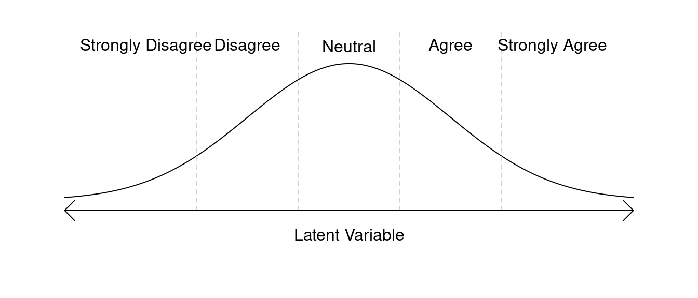
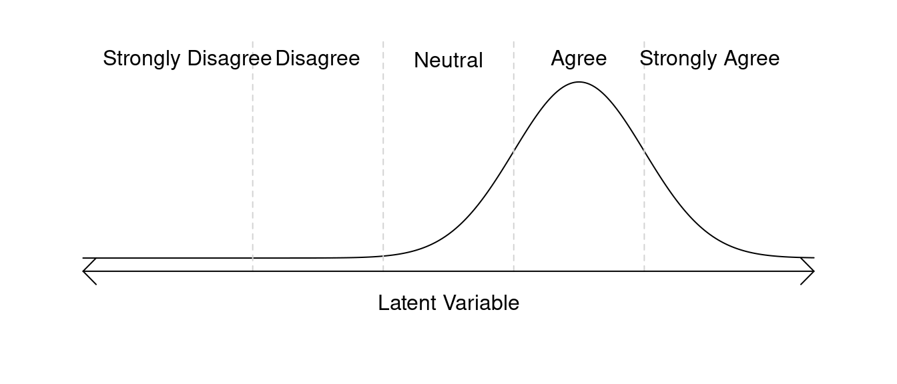
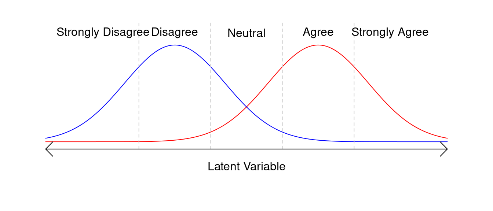
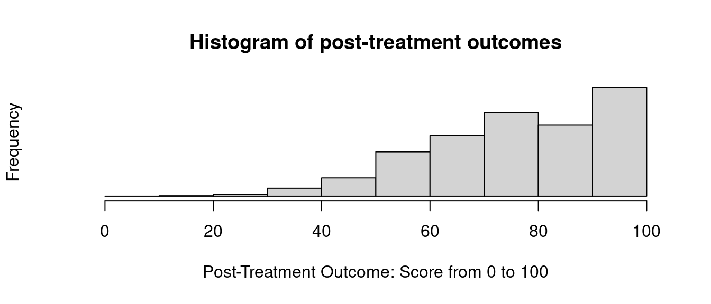
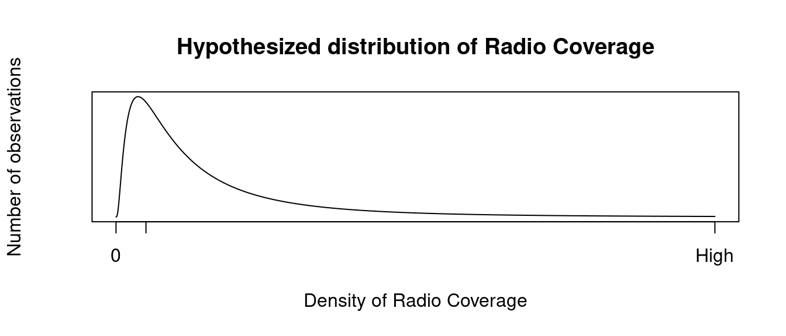
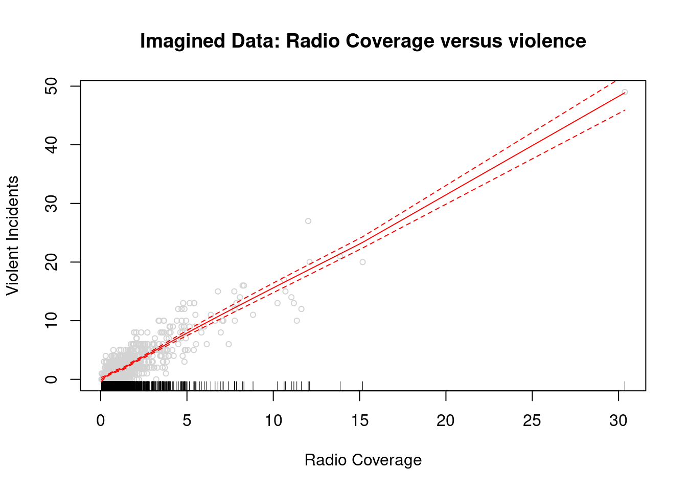

Common Social Science variables
fabricatr makes it easy to generate common social science variables. While our other online tutorials focus on exploring the full extent of fabricatr’s capabilities, this tutorial focuses on simple plain-English introductions to common variable types used in social science research, along with an introduction to the statistical terminology associated with them. Examples are drawn from pre-analysis plans filed with Evidence in Governance and Politics (EGAP).
If you already feel comfortable understanding these concepts and would prefer a technical manual for our variable creation functions, please consult our Generating Variables tutorial.
Binary outcomes (e.g. turnout)
The simplest possible outcome of interest is a binary outcome: one that can be either true or false. An example of this sort of outcome in a social science research context is whether or not a subject performs an action: Does a person seek medical treatment? Does a person turn out to vote? Does a person write a letter to their congressional representative? Is an infrastructure project completed on time? These sorts of questions are typically modelled as binary outcomes. The “yes” or “no” answer to your question of interest is represented as 1 (“yes”) or 0 (“no”) numerically.
In fabricatr, binary data can easily be modeled with the draw_binary() function:
voter_turnout = draw_binary(prob = 0.4, N = 100)
table(voter_turnout)| voter_turnout | Freq |
|---|---|
| 0 | 58 |
| 1 | 42 |
draw_binary requires that you supply two pieces of data: prob, which specifies either a single probability or a vector of probabilities (one for each unit), the probability of getting a “1” in your simulated data. For instance, here we are modeling a turnout rate of 40%. Second, it requires N, which specifies how many observations to create.
It is also possible to specify the probability stochastically. Imagine if you wish to model a population where individuals under age 40 have a low turnout rate, while individuals above age 40 have a high turnout rate. This is very simple with fabricatr:
population <- fabricate(
N = 100,
age = round(runif(N, 18, 85)),
turnout = draw_binary(prob = ifelse(age < 40, 0.4, 0.7), N=N)
)This example introduces you to a few new functions. First, we can wrap multiple variable creation commands in a fabricate call. This will ensure the result is a data frame, and that each variable creation command has access to the previous variables. Second, you see that we can model age using R’s built-in runif function. If you would like more information about modeling statistical distributions in R, see the ?Distributions manual page. Third, you see that we model turnout probability statistically; if the user has an age below 40, they receive turnout probability 0.4. If not, they receive turnout probability 0.7.
As noted in the introduction for this tutorial, the target audience for this tutorial is someone interested in common social science outcome variables, but without a strong background in thinking about modelling these variables. If you feel comfortable modelling but need to learn how to specify the variables in fabricatr, please see our tutorial on variable generation with fabricatr. If you need more information about modeling the structure of data or implementing multi-level models, panel data, or cross-classified data with fabricatr, then please see our tutorial on building and importing data.
Ordered data (e.g. satisfaction)
The type of data generated for many survey questions is “ordered”. Ordered data includes the “Likert scale”, and is used when respondents to a survey report an outcome which has a logical ordering from lowest to highest but is not necessarily measured in numerically comparable terms. Consider a basic question like “Do you approve of your mayor’s job performance?”. There are many ways you could measure a respondent’s answer to this question, but one of the most common is by offering the respondent the choice to “Strongly Disapprove”, “Disapprove”, feel “Neutral”, “Approve”, or “Strongly Approve”. This five point scale is ordered data.
When simulating ordered data, we typically think of the problem differently, as a two-step process. The first step is to assign a respondent a score over some range, and the second step is to translate that score into the categories of the ordered variable. We call the first step a “latent variable”. In the real survey, we never see the latent variable, only the ordered data outcome. But we can rely on the latent variable to help shape our simulated data.
We generate a simulated latent variable and then translate it into a simulated ordered variable, like so:

In the above graph, most respondents (the “density” represented by the height of the curve) are neutral about the mayor, and relatively few hold extreme opinions. We generated a “normal” latent variable for our respondents and then translate this to the ordered outcome. The simplest normal variable is the “standard normal”, a random variable whose mean (center) is 0, and whose standard deviation (spread) is 1. So, although it is not shown in the graph above, the dashed lines which divide the ordered outcomes are located at -1.5, -0.5, 0.5, and 1.5.
Of course it would also be possible to affect the center and spread of this question:

Although thinking about ordered data in this latent context may seem strange at first, actually generating an ordered data outcome in fabricatr is quite easy:
mayor_approval <- draw_ordered(x = rnorm(n = 100),
breaks = c(-1.5, -0.5, 0.5, 1.5),
break_labels = c("Strongly Disagree", "Disagree",
"Neutral", "Agree",
"Strongly Agree"))
table(mayor_approval)| mayor_approval | Freq |
|---|---|
| Strongly Disagree | 7 |
| Disagree | 20 |
| Neutral | 42 |
| Agree | 22 |
| Strongly Agree | 9 |
Let’s look at this draw_ordered example. draw_ordered requires three pieces of information from us: x (the latent variable), breaks (the places in the latent variable which divide the categories in the ordered outcome), and break_labels (which label the resulting ordered outcome).
For x, we use the rnorm command to generate 100 standard normal draws representing our respondents. For breaks and break_labels, we mark and label the breaks as we did above.
The appeal of fabricatr is that we can create relationships between variables, so let’s imagine a slightly more complex data where in general the mayor is well liked by members of her political party, but not by members of the opposite political party. To do this, we’ll need to assign respondents to a political party (we’ll mark the mayor’s political party with “1” and the opposition political party with “0”) and then generate our latent variable.
First, let’s visualize the latent variable:

Here, colors indicate the two parties. We see that some members of the red party do disagree with the mayor, but the overwhelming majority do not, and vice versa for the blue party. Now, let’s put our visualization into action:
respondent_data <- fabricate(
N = 100,
mayor_copartisan = draw_binary(prob = 0.6, N),
mayor_approval = draw_ordered(
x = rnorm(N, mean = -1 + 2 * mayor_copartisan),
breaks = c(-1.5, -0.5, 0.5, 1.5),
break_labels = c("Strongly Disagree", "Disagree", "Neutral",
"Agree", "Strongly Agree")
)
)
table(respondent_data$mayor_approval, respondent_data$mayor_copartisan)| 0 | 1 | |
|---|---|---|
| Strongly Disagree | 17 | 0 |
| Disagree | 14 | 4 |
| Neutral | 9 | 12 |
| Agree | 1 | 18 |
| Strongly Agree | 1 | 24 |
This example is a little more complex. You can see the use of the fabricate wrapper function, which is described in more detail in our Building and Importing Data guide. Additionally, the latent variable x is more complex. Let’s consider the formula for how this variable is specified. We know that the latent variable space from -1.5 to -0.5 indicates “Disagree”. For respondents who have mayor_copartisan equal to 0 (they are not in the mayor’s political party), their preference will be a standard normal draw centered at \(-1 + (2 * 0) = -1\). For respondents who have mayor_copartisan equal to 1 (they are in the mayor’s political party), their preference will be a standard normal draw centered at \(-1 + (2 * 1) = 1\) – “Agree”.
It is easy to play with the location of breaks, labels for breaks, and format of the underlying latent variable. Here’s an example where the latent variable is “uniform” – there is an equal likelihood of choosing each of the options:
mayor_approval <- draw_ordered(x = runif(n = 100, min = -2.5, max = 2.5),
breaks = c(-1.5, -0.5, 0.5, 1.5),
break_labels = c("Strongly Disagree", "Disagree",
"Neutral", "Agree",
"Strongly Agree"))Users who are new to the R programmming language and want to know more about other statistical distributions beyond the norm and unif distributions used here, should run the command ?Distributions in the R console.
Likert Data
Many survey responses that focus on labeling agreement, support, or quality evaluation, including the example above, are called “Likert” data after the psychologist Rensis Likert. These scales are typically 4, 5, or 7 point scales of a measure. fabricatr includes a simple shortcut to make Likert variables without needing to fill out the breaks and break_labels each time.
By using draw_likert, users only need to specify the x latent variable – assumed to be distributed with breaks spaced 1 unit apart and with the data centered on 0 – and the type of Likert they would like (the number of categories). In this example, we examine the same data above, but with a 4-category Likert scale where the options are “Strongly Agree”, “Agree”, “Disagree”, and “Strongly Disagree”, with no neutral category.
draw_likert(runif(n = 100), min = 0, max = 1, bins = 7)
table(mayor_approval)| mayor_approval | Freq |
|---|---|
| Strongly Disagree | 16 |
| Disagree | 25 |
| Neutral | 20 |
| Agree | 26 |
| Strongly Agree | 13 |
Categorical data (e.g. demographic measures)
Surveys often collect demographic information from respondents, including age, gender, and ethnicity. By this point in our guide, you have begun to see how you might generate a continuous numerical variable like age, or how you traditional binary measures of gender might be specified. But some variables, like inclusive measures of gender, or ethnicity, (or hair color, eye color, city of residence, or many other possible variables of interest) are not “ordered” in any sense.
These data are often called “categorical” data – a given person has a probability to belong to each of the possible categories.
Imagine that researchers are conducting a survey in Kenya. They wish to capture the country’s four largest ethnic groups: Kikuyu, Luhya, Kalenjin, Luo, and are also interested in capturing the smaller Maasai group. Other respondents are identified as “Other”. When preparing their research, the researchers must simulate the ethnicity of their expected respondents, so they first gather the proportions of each group,
Kikuyu Luhya Kalenjin Luo Maasai Other
0.172 0.138 0.129 0.105 0.022 0.435 fabricatr makes it easy to generate data based on specifications like these using draw_categorical:
respondent_ethnicity <- draw_categorical(
prob = c(0.172, 0.138, 0.129, 0.105, 0.022, 0.435),
category_labels = c("Kikuyu", "Luhya", "Kalenjin", "Luo", "Maasai", "Other"),
N = 100)
table(respondent_ethnicity)| respondent_ethnicity | Freq |
|---|---|
| Kikuyu | 24 |
| Luhya | 12 |
| Kalenjin | 10 |
| Luo | 8 |
| Maasai | 4 |
| Other | 42 |
Data with fixed minimum and maximum values
It is often useful to generate data with fixed minimum or maximum values, but unclear how to best do so. In general the approach we would advocate to doing this is to generate a latent variable (described above) which might fall outside the minimum and maximum values, and then truncating the variable to the minimum and maximum values.
Consider an experiment with a pre-post treatment design. A series of respondents are asked about their views on government efficacy, which will be measured by the respondents scoring their government from 0 to 100. Some respondents are then given a treatment intervention: for example, information about government service delivery, or a mechanism to report government fraud or waste. Finally, researchers ask the same respondents the same question about government efficacy.
Researchers might simulate this experiment by choosing a population level Average Treatment Effect (in our example, assume a moderate treatment effect of 15 points), and adding a shock centered at this point to each treated unit’s pre-treatment outcome (in addition to adding noise to the control group). A challenge with this data is that it is naturally truncated: individuals whose scores were already quite high may now be modeled as having post-treatment scores above 100.
In fact, in this example, some respondents have pre-treatment scores above 100! This matters because the real-world data gathered later will be truncated, and so the researchers power to detect effects may be compromised because of a high density of responses near the cutoff. As a result, it is important that researchers model the truncation directly. Doing so is simple using functionality provided by R: pmin and pmax.
When used to truncate variables like this, pmax takes two arguments: a vector of numeric variables, and a minimum value you want to truncate to. Please note that, counter-intuitively, pmax is used to truncate to the minimum value and pmin is used to truncate to the maximum value. We see this design in action below:
Let’s consider how pre_outcome is created: first, each respondent is assigned a pre_treatment score with a mean of 70 points and a standard deviation of 15 points. Next, each of those scores is fed to pmax, along with an argument 0. Any scores that are lower than 0 are bumped up and truncated to 0. Finally, these scores are fed to pmin, along with an argument 100. Any scores that are higher than 100 are bumped down and truncated to 100. The result is that our variables display the desired effect:

Count outcomes and skewed distributions
Researchers may be interested in “count” outcomes, which describe a count of events of interest during a fixed time period. For our example in this section, we draw from “Propaganda and Conflict: Evidence from the Rwandan Genocide” (Yanagizawa-Drott 2014), an article which uses a quasi-experimental design to establish an association between the broadcasts of Radio Télévision Libre des Mille Collines and local instances of violence during the Rwandan Genocide. Substantively, the paper’s conclusion is that higher density in radio coverage is associated with greater local participation in genocidal violence.
In our version of this data, we have two variables of interest: number of violent incidents, and density of radio coverage. We know a priori that both variables must be at least 0, we are unsure what the maximum number might be, we know that the number of violent incidents must be a “discrete” variable (in this case, a whole number) while radio coverage is “continuous” (can take fractional values).
First, to model the number of violent incidents, we make use of fabricatr’s draw_count function, which is quite simple – it needs two arguments: mean, which describes the mean count, and N, which describes how many units you need count data for. Statistically, this function generates “Poisson-distributed” count data. This is one of the typical distributions used for count data.
Second, to model the radio covarage, we might believe radio coverage is an example of skewed data; in other words, few urban areas might have extremely dense radio coverage, while many rural areas might have very low radio coverage. We, thus, need a data distribution that looks like this:

R makes available a fairly simple function for generating this sort of data, rlnorm, which generates log-normal data. Log-normal data is one of the key distributions used to model data with a skew like the one we hypothesize: for example, income data in a population (where relatively few wealthy people have substantially more income than relatively many working class people). rlnorm takes three arguments: n (the number of observations), meanlog (the mean of the log-transformed data), and sdlog (the standard deviation of the log-transformed data).
rtlme_model <- fabricate(
N = 1000,
radio_coverage = rlnorm(N, meanlog=0, sdlog=1),
violent_incident_count = draw_count(mean = 1.5 * radio_coverage, N = N)
)Replicating real data is important because the inference you draw when modeling results depends on the “support” (range of values observations take) and “density” (how many observations take each value); to the extent that real-world data will likely be dense in some regions of the data and sparse in others, it is important that your synthetic data is as well in order to recover inferences that will be accurate to your future real-world inferences, and particularly your uncertainty about those inferences.

Observe that the uncertainty around our predictions is far wider at the right end of the support, which has relatively little data, than at the left end of the support, where most of the data lives.
Thinking about choosing parameters for meanlog and sdlog is somewhat more mathematically complex in skewed distributions and depending on your use for, you might choose different parameters. Consult R’s documentation on log-normal data by running ?Lognormal. In addition, you may find it useful to investigate other distributions commonly used for this purpose including ?Beta and ?Gamma.
Below we present an example of generating income data which roughly approximates the current U.S. income distribution using the rgamma function. The parameters of this income function were derived by extracting quantiles of the current U.S. income distribution and then selecting the gamma distribution parameters and multipliers which best fit the data:
In addition to the helper functions provided by fabricatr and the built-in R distributions suitable for generating skewed data, other R packages like sn also include useful functions for generating skewed data and can be incorporated into fabricate calls.
What’s next?
This brings us to the end of this introductory tutorial on common social science variables. As a next step, our tutorial on variable generation with fabricatr – targeted to a slightly more technical audience – contains more examples of the kinds of variables you can easily create with fabricatr. In addition, we have tutorials on creating time series variables, and on using other variable creation packages with fabricatr.
Finally, if you are in interested in learning about how to structure your data (for example, to generate multi-level, panel, or cross-classified data), you can consult our tutorials on building data in fabricatr, and panel and cross-classified data in **fabricatr*.